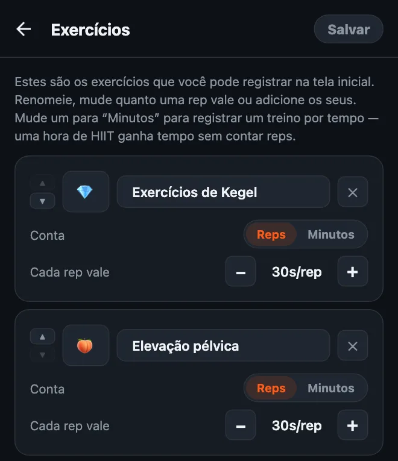
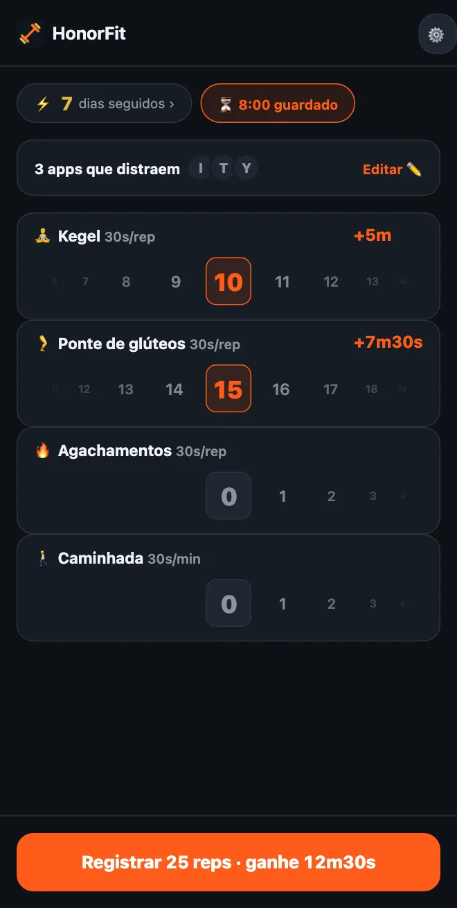

Faça Kegel para desbloquear o celular
Oi, gente! Eu criei o HonorFit porque queria umas flexões entre mim e o Instagram, sem ter que apoiar o celular para uma câmera contar (fazer isso num posto de gasolina não foi meu melhor momento, kkk). Você faz as reps, você mesmo registra, e seus apps desbloqueiam.
Só que flexão não é para todo mundo. E uma das coisas que mais combinam com essa ideia nem é flexão: são os exercícios de Kegel e a ponte de glúteos. Vou explicar por quê, e como configurar.
Por que o Kegel combina tanto com o sistema de honra
Ninguém vê um Kegel. Nem a pessoa do seu lado no ônibus, nem seus colegas de trabalho, e com certeza não a câmera do celular. Um app que conta reps pela câmera literalmente não consegue contar esses.
O HonorFit nem tenta. Ele funciona no sistema de honra: você faz, gira a roda até o número que fez, pronto. Então dá para ganhar seu tempo de TikTok numa reunião, na fila do mercado ou no sofá, e ninguém fica sabendo.
E isso resolve o que todo mundo fala sobre Kegel: “Eu sei que deveria fazer, só que esqueço”. Se você pega o celular um monte de vezes por dia (sem julgamento, eu também), agora cada uma dessas vezes é um lembrete.
A ponte de glúteos não é invisível, mas é fácil de fazer no chão ou até na cama, não precisa de equipamento e combina muito bem com o Kegel.
Como configurar
Exercícios personalizados fazem parte do HonorFit Pro (US$ 3 por mês ou US$ 19,99 em pagamento único nos EUA; o preço varia conforme o país e a moeda, e a loja mostra o seu). A versão grátis tem flexões, abdominais, barra fixa e agachamentos. Se você tem o Pro:
- Toque na engrenagem na tela inicial e depois no card Exercícios.
- Toque em ＋ Adicionar exercício, toque no nome e chame de Kegel.
- Adicione outro e chame de Ponte de glúteos.
- Ajuste Cada rep vale com os botões −/+ (minhas sugestões estão logo abaixo).
- Opcional: toque no quadradinho do emoji para escolher um ícone. Eu fui de 🧘 para o Kegel e 🦵 para a ponte. O seletor tem uns 40 emojis de academia, então não tem 🍑, foi mal!
- Remova os que você não vai usar com o ✕ (a barra fixa, talvez?) e toque em Salvar.

O passo a passo completo do editor, incluindo treinos por tempo, está em como personalizar seus exercícios no HonorFit.
Quanto tempo de tela cada rep deveria valer?
Eu começaria com isto:
| Exercício | Cada rep vale | Uma série típica vale |
|---|---|---|
| 🧘 Kegel | 30 segundos | 10 Kegels = 5 minutos |
| 🦵 Ponte de glúteos | 30 segundos | 15 pontes = 7m30s |
| 🚶 Caminhada (por tempo) | 30 segundos por minuto | caminhada de 20 minutos = 10 minutos |
Ou seja, uma série de 10 Kegels mais 15 pontes rende uns 12 minutos e meio. Ajuste a partir daí. Se estiver fácil demais acumular tempo, abaixe os valores. Se você se pegar registrando reps que não fez, o preço está alto demais, então abaixe.

Uma coisa sobre o Kegel: mais não é melhor. Sites de saúde como a MedlinePlus e a Cleveland Clinic (ambos em inglês) costumam falar em séries de umas 10, algumas vezes por dia, e dizem que exagerar pode deixar os músculos tensos demais. Então, por favor, não transforme isso em 100 Kegels por uma hora de YouTube! É por isso que eu daria um valor razoável por rep e deixaria a ponte de glúteos, o agachamento ou uma caminhada cobrirem a parte maior.
Os movimentos básicos
Sou desenvolvedor de apps, não personal trainer nem fisioterapeuta, então isto é só a ideia geral. Os links acima têm as instruções direitinho.
- Kegel: contraia os músculos que você usaria para segurar o xixi, segure por alguns segundos e depois relaxe totalmente por alguns segundos. Isso é uma rep. Continue respirando e tente não contrair a barriga, as coxas nem o bumbum. (Interromper o xixi no meio é um jeito de encontrar esses músculos uma vez, não algo para praticar sempre.)
- Ponte de glúteos: deite de costas com os joelhos dobrados e os pés apoiados no chão. Contraia os glúteos e suba o quadril até o corpo formar uma linha reta dos ombros aos joelhos, faça uma pausa e desça devagar. Isso é uma rep. Tem gente que gosta de fazer um Kegel lá em cima.
Se você está grávida, no pós-parto, tem dor pélvica ou sente dor ao fazer Kegel, fale antes com seu médico ou com um fisioterapeuta pélvico. Eles podem dizer o que é certo para o seu corpo, e às vezes a resposta é “Kegel agora não”, e tudo bem. Dá para configurar o HonorFit com o que eles recomendarem no lugar.
Algumas dicas
- Fique com três ou quatro exercícios. Algo como Kegel, Ponte de glúteos, Agachamentos e Caminhada cobre sentado, deitado e na rua. Cada um ganha sua própria roda, então quanto menos, mais fácil.
- Use um treino por tempo nos dias em que você sai. Mude um exercício para Minutos (ou toque na sugestão Caminhada ou Ioga) para que uma caminhada ou uma aula também rendam tempo.
- Rotinas salvas (Pro, ative nos Ajustes) deixam você salvar até 3 combinações de reps, tipo “10 Kegels + 15 pontes”, e aplicar uma com um toque só.
- Bloqueie um ou dois apps, não tudo. Aquele que come as suas noites.
Se Kegel também não é a sua, escrevi sobre algumas opções de baixo impacto que dá para fazer até na mesa do trabalho.
HonorFit Blocker é um bloqueador de apps grátis para iPhone e Android. Sistema de honra, sem câmera, nada sai do seu celular. Exercícios personalizados, como o Kegel, vêm com o Pro. Quem sabe alguns de vocês curtem!